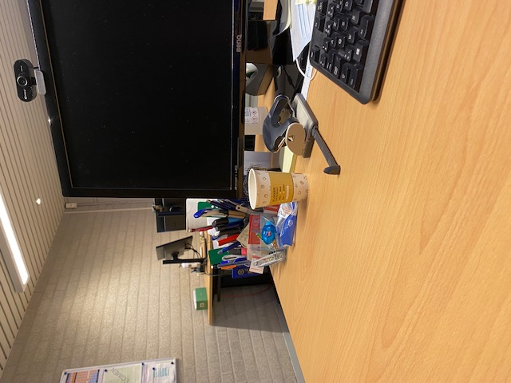

Dagverslag 4: Donderdag 19/01
Begintijd: 8:00 Eindtijd: 16:15 Pauzes: 9:45 tot 10:00, 12:00 tot 12:30, 14:45 tot 15:00
Vandaag heb ik mijn stage gedaan bij Els, maar omdat zij pas om 9 uur begon heb ik eerst een half uur meer informatie gekregen van Jef. Jef werkt op de personeelsdienst en heeft mij uitgelegd wat een evaluatie- en functioneringsgesprek inhoud. Ik heb geleerd dat mijn stage bedrijf enkel functioneringsgesprekken voert. Nadat Els was aangekomen, heeft ze me laten zien hoe zij banken inboekt. Ik merk dat dit een heel belangrijk deel is van de boekhouding, omdat dit elke dag moet gebeuren. Op mijn stagebedrijf heeft elke werknemer een KBC Mastercard voor werk gerelateerde aankopen. Els heeft mij uitgelegd hoe deze geboekt moeten worden. Hierna heeft ze laten zien hoe inkoopfacturen ingeboekt worden, dit vond ik heel boeiend omdat ik dit nog wou leren. Na haar uitleg heb ik dit zelf mogen doen. Ik merkte dat Els me hierin vertrouwde, omdat ze me vaak alleen liet.
Leerpunt van de dag: Ik wil meer leren over Excel.
Mijn dag in één woord: Interessant
Foto:
